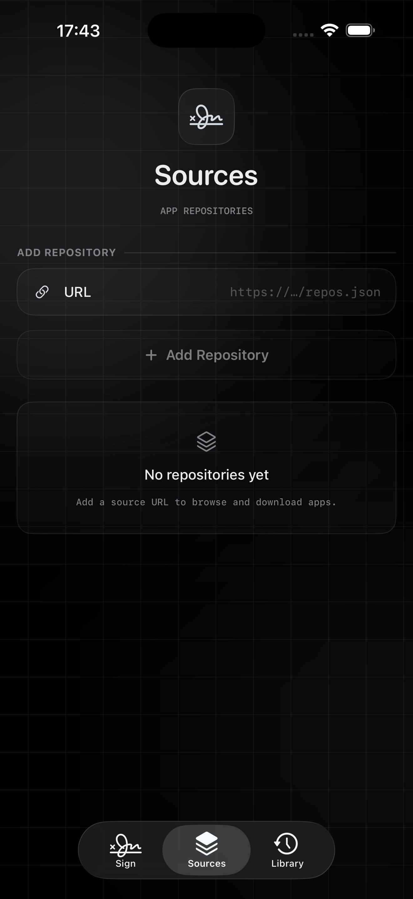
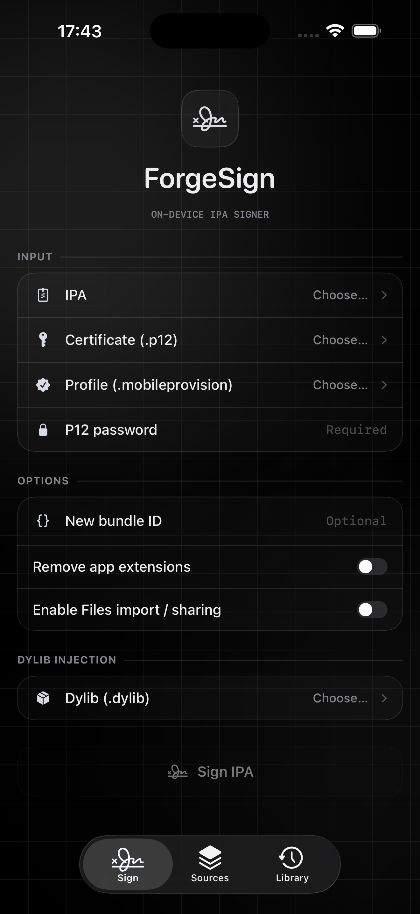
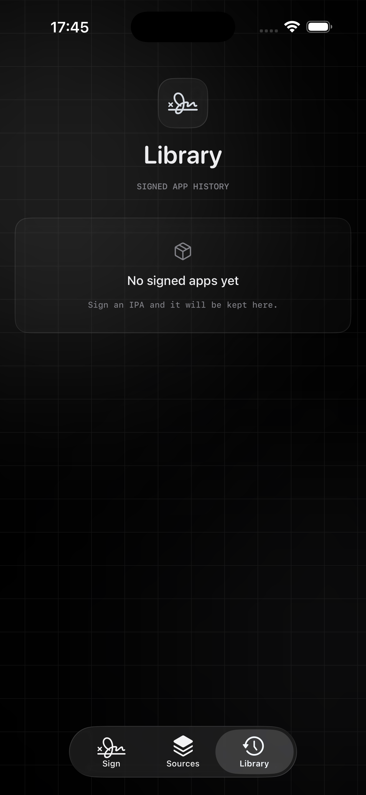

Sign on-device
Bring an IPA, certificate, and profile to the device. The existing zsign workflow handles the signing pass locally.
On-device IPA signer
ForgeSign brings a focused signing, install, and library workflow to iPhone and iPad. Choose your materials, see what is ready, and keep the pass local.



Latest release · Version 2.8.3
ForgeSign 2.8 improves the complete signing pass: safer imports, visible download progress, stronger preflight checks and reliable OTA delivery. Clear Liquid Glass stays at the center of the interface. 2.8.1 added a readable iPad layout, and 2.8.3 restores Apple Account sign-in with community anisette servers after Apple's October 2026 change and lets you sign with a custom bundle ID again.
ForgeSign · Dark-mode review
The app stays glassy and legible in dark mode, with the same information hierarchy across each tab.
A complete signing pass
The interface stays quiet until you need a decision, then puts the next useful action in reach.
Bring an IPA, certificate, and profile to the device. The existing zsign workflow handles the signing pass locally.
See package, bundle, encryption, and architecture signals before committing to a signing run.
Keep validated certificate details and optional passwords available for repeat signing without re-entering everything.
Opt in to compatible decrypted Mach-O dylibs, with a separate app-extension toggle, before the normal signer runs.
Save repository feeds, inspect available IPAs, and send a selected download into the same signing flow.
Keep signed history together with reinstall, share, delete, and the existing semi-local install path.
The rhythm
Optional tools stay beside the core pass, so the familiar signing route remains familiar.
Choose an IPA and read the preflight signals before signing.
Add a certificate, profile, and any optional bundle or dylib choices.
Run the on-device signer and save the result to the library.
Use the existing install action when the signed app is ready.
Workflow review
A product review of the interaction itself: fewer hidden steps, clearer boundaries, and a library you can return to.
The IPA gets a quick read before the signing action, so a missing or unsuitable input is visible earlier.
Dylib injection and app-extension handling are surfaced as an opt-in layer around the unchanged normal route.
Sources feed the same signer, while Library keeps signed history close for the next install or share.
Questions, answered
No. The release is intentionally unsigned so you can sign it with your own certificate and provisioning profile before installing.
2.8.3 lets you sign with a custom bundle ID again: when no imported profile matches it, the selected profile signs the main app, as it did up to 2.7. It also includes the unpublished 2.8.2 changes, which restore Apple Account sign-in with community anisette servers after Apple's October 2026 change, make Library refresh install as an upgrade, and fix packaging of apps named with "Payload". 2.8.1 keeps iPad content at a readable width instead of stretching every row across the display; iPhone layouts are unchanged. It sits on top of 2.8, which added download and copy progress, safer imports, stronger preflight checks and storage controls, fixed OTA connection failures and iOS 27 compatibility issues, preserved clear Liquid Glass, and updated the signing engines to OpenSSL 3.5.9 LTS. See the release notes for validation details.
Use a compatible, decrypted Mach-O dylib that matches the target architecture. Injection is performed on a disposable IPA copy before the existing signer; the original input is left untouched.
The signing workflow is designed to run on-device. You remain responsible for the source IPAs, certificates, profiles, and modifications you choose to use.
ForgeSign is developed in public on GitHub. Issues and release notes live there too.
Download ForgeSign 2.8.3 and bring your own signing materials.